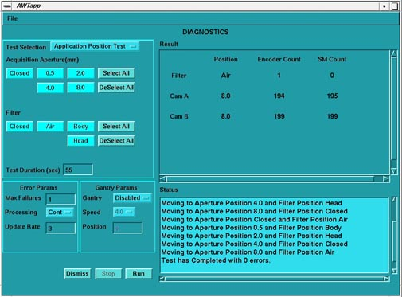

Proprietary to General Electric
Direction 5114043-800, Rev# 9
LightSpeed 3.X Service Methods (Advanced)
Proprietary to General Electric |
OBJECTIVE
Verify that the Collimator Control (CCB) is functional.
REFERENCES
Functional Interconnects - Rotating Controller Interface Bus (RCIB) - 2305060
Functional Interconnects - X-Ray Collimation and Filtration - 2267744
Before beginning this procedure, please read the safety information in Equipment Service - Gantry.
PROCEDURE SUMMARY
Verify correct “Flash” firmware is downloaded.
Select [SERVICE DESKTOP] .
Select [DIAGNOSTICS] .
Select [X-RAY GENERATION] .
Select [COLLIMATOR AND FILTRATION] .
Exercise the Application Position Test and verify no test failures. Reference Illustration 1.
Comment: Please note that generally you may not get this far if the CCB board is faulty. Test execution failures not errors within the test generally indicate a problem with the CCB and or the GCAN.
Illustration 1: Collimator Applications Position Test
